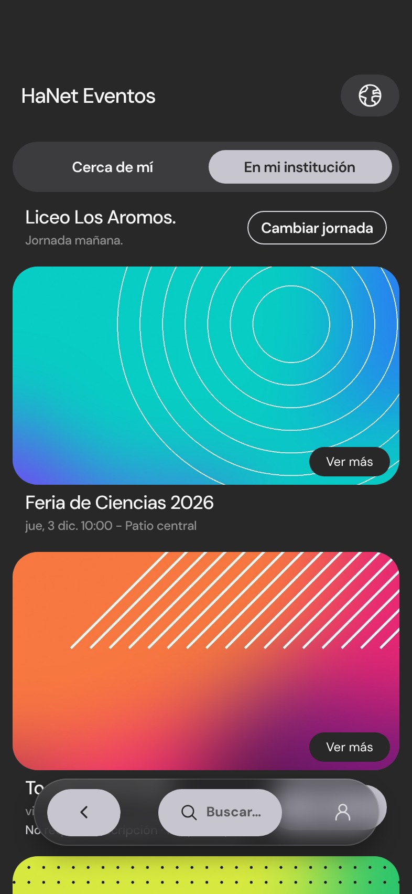
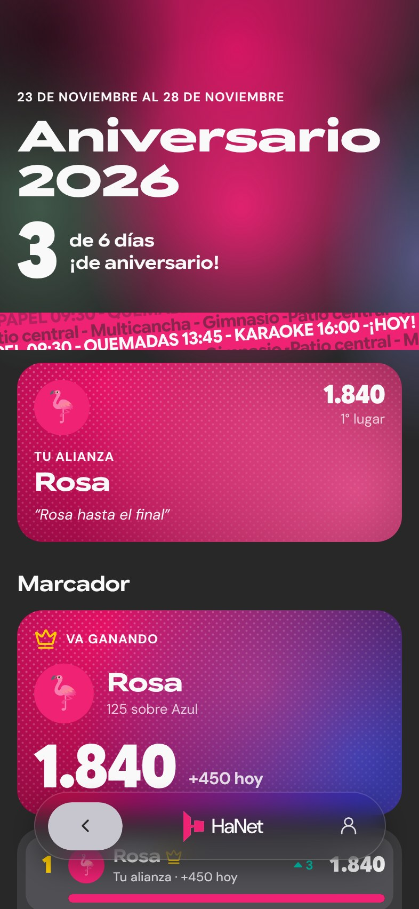
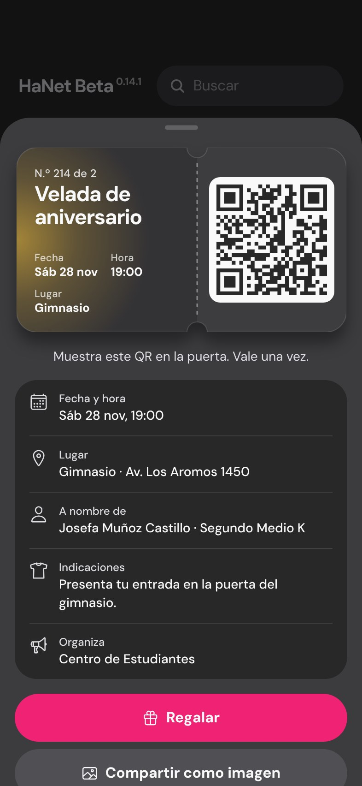
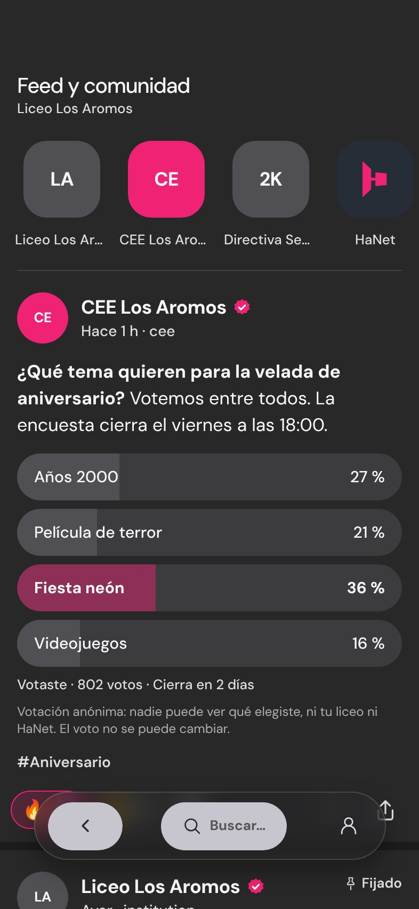

Eventos, entradas, avisos, votaciones y la semana de aniversario, desde tu teléfono. Todo lo que HaNet hace por el CEE, en la app y en el panel web.



En esta guía
Empieza aquí2
Aniversario5
Comunica3
Cursos y directivas6
Eventos y entradas4
Cuida a tu comunidad7
Equipo HaNet · muxp@muxp.art · docs.hanet.muxp.art1 de 7
Guía para el CEE
1 Empieza aquí
Tu rol, tus herramientas
Quienes forman la directiva del Centro de Estudiantes tienen el rol CEE. Lo asigna la administración del liceo, y cuando cambia la directiva, cambia el rol.
1
Entra a HaNetCrea tu HaNet ID en app.hanet.muxp.art, escribe el código de invitación de tu liceo y vincula tu correo institucional.
2
Pide tu rol CEELa administración te lo asigna en el panel web. Te llega una alerta cuando cambia.
3
Abre OrganizarEs el botón junto al buscador del Inicio. Cuando tienes un evento con la puerta abierta, lleva un punto rosado. ¡Y ya estás listo!
Qué hay en Organizar
Hoy
Los eventos del día, con el conteo de llegadas en vivo y el botón para escanear.
Notificaciones
Un mensaje corto que llega al instante al teléfono de quienes elijas.
Publicar
Un aviso en el Espacio del CEE, una votación o un evento.
Eventos y entradas
Tus eventos, con inscritos, entradas emitidas y llegadas.
Cursos y clases
Los Presidentes de cada curso.
Aniversario
Alianzas, actividades, puntos, plazos y pruebas flash.
Abre HaNetapp.hanet.muxp.artEn iPhone, agrégala a la pantalla de inicio desde Safari.
Panel webpanel.hanet.muxp.artEventos, directivas de curso y el Calendar en pantalla grande.
Equipo HaNet · muxp@muxp.art · docs.hanet.muxp.art2 de 7
Guía para el CEE
2 Comunica
Que todo el liceo se entere
Avisa lo que no puede esperar con una notificación, publica en el Espacio del CEE y pregúntale a tu comunidad con votaciones anónimas.
App
Notificaciones
1
Escribe el mensajeEn Organizar → Notificaciones, hasta 200 caracteres.
2
Elige a quién le llegaTodo el liceo, una jornada, algunos cursos, los Presidentes de curso o las directivas.
3
ConfirmaHaNet pregunta "¿Enviar a N personas?". Una notificación enviada no se borra.
Sale a nombre del CEE, no de una persona, y queda en las Notificaciones de cada uno.
Puede abrir el Calendar o un evento del liceo al tocarla.
El CEE puede enviar hasta 5 al día. En Enviadas ves las tuyas.

El Feed, con el Espacio del CEE.
El Espacio del CEE
Publica para todo el liceo: texto con formato, hasta 6 imágenes y hasta 3 tags. Fija lo importante arriba o envíalo como notificación. Tus compañeros reaccionan con emoji.
Si tu liceo activa Feed
Votaciones anónimas
Escribe la pregunta y las opciones, elige cuánto dura (de 1 día a 2 semanas) y si los resultados se ven al votar o al cerrar. Nadie puede ver qué votó cada persona.
Si tu liceo activa Votaciones
Equipo HaNet · muxp@muxp.art · docs.hanet.muxp.art3 de 7
Guía para el CEE
3 Eventos y entradas
Del recreo a la velada
¿Una feria, un torneo o una charla? Publícala en Eventos. ¿Una velada o una gala? Ofrece y emite entradas con QR y sigue en vivo quiénes llegaron y quiénes no.
AppPanel web
Publica un evento del liceo
1
Lo esencialPortada, nombre, fecha, lugar y descripción.
2
La jornadaMañana, tarde o ambas: cada estudiante ve lo que le corresponde.
3
La inscripciónCon lista (nombre y curso), solo contador o sin inscripción, con cupo si quieres.
Tus compañeros se inscriben, reaccionan y comparten el evento como historia para Instagram. Desde el panel web descargas los inscritos para Excel. Para saber quién llegó, usa Pasar lista y escanea el HN-QR del perfil de cada estudiante.
Eventos del liceo.
Entradas con QR
Un evento privado o formal solo lo ven quienes tienen entrada.
Emite por curso, a cada estudiante o al Presidente de cada curso para que las reparta.
Invita a alguien de fuera con un link, sin que cree una cuenta.
El QR cambia solo: una captura de pantalla no sirve en la puerta.
Si tu liceo activa Entradas
El día del evento
Desde 3 horas antes, tu Inicio muestra "Hoy organizas" con cuántos llegaron y el botón Escanear. El teléfono suena distinto si la entrada es válida o si ya se usó. ¿Mucha gente? Autoriza a docentes para escanear contigo.
Equipo HaNet · muxp@muxp.art · docs.hanet.muxp.art4 de 7
Guía para el CEE
4 Aniversario
La semana de alianzas, en vivo
Cada estudiante ve su alianza, el marcador en vivo, lo que viene hoy y los plazos, y le llegan las pruebas flash al instante. Tú lo organizas todo desde Organizar.
Si tu liceo activa AniversarioApp
1
Arma las alianzasPon las fechas y agrupa cursos completos. Cada alianza lleva colores, hasta tres mascotas, lema, grito, Instagram, artistas y lo que salió en el sorteo.
2
Carga las actividades"Cargar actividades típicas" trae nombres y puntajes comunes que puedes editar. También puedes crear las tuyas.
3
Nombra a los jefes de alianzaEllos reciben las pruebas flash de su alianza.
Actividad
Cómo suma
Por lugares
Defines los puntos del 1°, 2°, 3°… y al poner el resultado se suman solos.
Con puntos a mano
Escribes los puntos de cada alianza.
El marcador, en vivo.
Puntos con motivo
Suma o descuenta en cualquier momento, siempre con un motivo. Nadie escribe un total a mano.
Plazos
Lo que las alianzas deben entregar. Les llega un aviso 24 y 2 horas antes.
Pruebas flash
Escríbela, elige si va a los jefes o a toda la alianza y toca Lanzar. Llega al instante.
¿Quieres guardar la sorpresa? Oculta el marcador y revela la ganadora en la premiación, con confeti. Los avisos del aniversario son publicaciones del Feed con el tag #Aniversario, y pueden salir con "Avisar a las alianzas".
Equipo HaNet · muxp@muxp.art · docs.hanet.muxp.art5 de 7
Guía para el CEE
5 Cursos y directivas
Cada curso, con quien lo represente
Nombra a las directivas y a los Presidentes de cada curso, y mantén al día el Calendar de tu propio curso.
Directivas de curso
En el panel web, en Directivas de curso, das o quitas el rol Directiva a estudiantes de cada curso. Ves su nombre y curso, nunca su RUT ni su correo.
Panel web
Presidentes de curso
Uno por curso, en Organizar → Cursos y clases. Reciben las entradas de su curso para repartirlas, y puedes enviarles notificaciones solo a ellos.
App
Qué puede hacer una directiva de curso
Calendar del curso
Agenda evaluaciones, tareas, entregas y actividades. El docente de la asignatura puede confirmarlas con su sello.
Horario
Arma el horario del plan común del curso, con recreos y almuerzo.
Feed
Publica en el Espacio de su curso, solo para su curso.
El Calendar de tu curso: como CEE también puedes agendar en el Calendar de tu propio curso. En el panel web lo ves en pantalla grande; para agregar o cambiar eventos se usa la app.
Equipo HaNet · muxp@muxp.art · docs.hanet.muxp.art6 de 7
Guía para el CEE
6 Cuida a tu comunidad
Organizar también es cuidar
El CEE también son estudiantes. Por eso HaNet no tiene funciones sociales entre estudiantes, y algunas reglas protegen a todos.
Los motivos nunca nombran personas
Un descuento de puntos dice qué pasó, no quién lo hizo. Las sanciones a estudiantes van por convivencia escolar, no por la app.
Votos siempre secretos
Nadie puede ver qué votó cada persona: ni el CEE, ni el liceo, ni HaNet. Cada cuenta vota una vez.
Notificaciones con criterio
Si llegan demasiadas, la gente las apaga. Envía como notificación solo lo que cambia el día de alguien, y deja lo demás en el Feed.
Tu cuenta, protegida
El panel web siempre pide un segundo paso. Si alguien entra a tu cuenta desde otro dispositivo, te llega una alerta, y puedes cerrar sesión en todas partes.
Lo que no hace el CEE en HaNet
Elegir estudiantes uno por uno o armar grupos para notificaciones: eso queda para la administración.
Ver RUT, correos ni notas de otros estudiantes.
Suspender clases o adelantar la salida.
¿Tienes ideas, quejas o encontraste algún error? ¡Avísanos en muxp@muxp.art! La guía completa de cada módulo está en docs.hanet.muxp.art.
Equipo HaNet · muxp@muxp.art · docs.hanet.muxp.art7 de 7